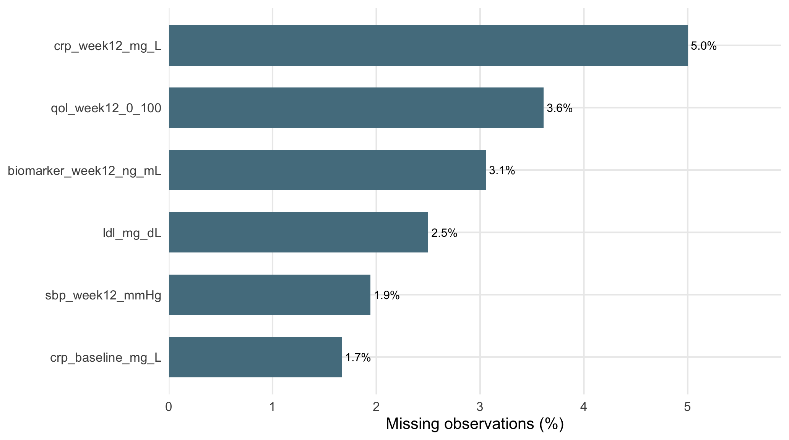

Exploratory data analysis (EDA) is the point at which the statistical problem becomes concrete. Before testing hypotheses, the analyst should know what each row represents, how variables are coded, where missing values occur, whether units are plausible, and how distributions differ across clinically relevant groups. EDA is therefore not a preliminary formality; it is part of model specification.
R is object-oriented in the practical sense that data, models, tables, and plots are stored as named objects and passed to functions. A compact working vocabulary is enough for most analyses:
| Task | Core R tools |
|---|---|
| inspect an object |
class(), str(), dplyr::glimpse()
|
| view dimensions |
nrow(), ncol(), dim()
|
| select variables | dplyr::select() |
| filter observations | dplyr::filter() |
| create variables | dplyr::mutate() |
| grouped summaries |
group_by() + summarise()
|
| reshape data |
pivot_longer(), pivot_wider()
|
| missingness |
is.na(), complete.cases(), drop_na()
|
| fit a model |
lm(), glm(), aov(), survival::coxph()
|
| inspect model output |
summary(), broom::tidy(), confint()
|
A few direct checks establish the data structure.
dim(dat);
#> [1] 360 43
dplyr::glimpse(dat[, 1:12]);
#> Rows: 360
#> Columns: 12
#> $ patient_id <chr> "P0003", "P0007", "P0008", "P0009", "P0010", "P0013", "P0015", "P0017", "P0018", "P0020", "P…
#> $ enrollment_date <dttm> 2025-12-07, 2025-10-22, 2026-01-01, 2025-01-15, 2025-08-30, 2026-04-13, 2026-06-13, 2025-08…
#> $ site <fct> Site_07, Site_02, Site_08, Site_04, Site_06, Site_03, Site_01, Site_08, Site_05, Site_07, Si…
#> $ region <fct> West, North, West, South, East, South, North, West, East, West, North, West, North, North, W…
#> $ treatment_arm <fct> Drug_B, Drug_A, Drug_A, Drug_A, Drug_A, Drug_B, Drug_A, Drug_A, Control, Control, Drug_B, Dr…
#> $ age_years <dbl> 37, 39, 56, 65, 63, 49, 50, 52, 53, 59, 48, 59, 54, 41, 76, 60, 45, 51, 70, 57, 48, 67, 77, …
#> $ sex_at_birth <fct> Female, Male, Male, Male, Male, Female, Female, Male, Male, Female, Male, Female, Male, Fema…
#> $ smoking_status <fct> Former, Former, Current, Never, Current, Former, Former, Never, Never, Never, Never, Current…
#> $ baseline_severity <fct> Moderate, Moderate, Mild, Severe, Moderate, Moderate, Mild, Mild, Mild, Severe, Mild, Modera…
#> $ bmi_kg_m2 <dbl> 27.2, 30.7, 18.3, 31.8, 31.3, 34.7, 23.2, 18.0, 24.8, 28.5, 25.2, 27.2, 37.6, 29.3, 33.4, 33…
#> $ sbp_baseline_mmHg <dbl> 128.6, 111.0, 123.5, 134.0, 124.3, 144.4, 126.8, 124.2, 111.5, 143.9, 125.0, 138.2, 125.0, 1…
#> $ sbp_week12_mmHg <dbl> 109.7, 109.2, 114.1, 126.8, 115.4, 142.3, 118.0, 119.0, 98.3, 147.6, 115.9, 122.6, 118.2, 11…
head(dat[, c("patient_id","treatment_arm","age_years","baseline_severity")], 4)
#> # A tibble: 4 × 4
#> patient_id treatment_arm age_years baseline_severity
#> <chr> <fct> <dbl> <fct>
#> 1 P0003 Drug_B 37 Moderate
#> 2 P0007 Drug_A 39 Moderate
#> 3 P0008 Drug_A 56 Mild
#> 4 P0009 Drug_A 65 SevereThe current workbook contains one row per participant. Patient IDs should therefore be unique.
audit <- tibble(metric=c("Participants","Variables","Unique patient IDs","Duplicate patient IDs","Missing cells"),
value=c(nrow(dat), ncol(dat_raw), dplyr::n_distinct(dat$patient_id), sum(duplicated(dat$patient_id)), sum(is.na(dat_raw))))
kbl(audit, digits=0, caption="Dataset audit")| metric | value |
|---|---|
| Participants | 360 |
| Variables | 35 |
| Unique patient IDs | 360 |
| Duplicate patient IDs | 0 |
| Missing cells | 64 |
The distinction between continuous, discrete, categorical, binary, and ordinal data determines what summaries and models are meaningful.
| Data type | Definition | Examples in this workbook | Typical analytical consequence |
|---|---|---|---|
| Continuous | values on a quantitative scale where arithmetic differences are meaningful | age, BMI, SBP, CRP, biomarker, QoL | means/SDs or robust summaries; linear models when appropriate |
| Discrete/count | integer-valued event or counts |
ae_count_12w, hospital_days_90
|
count summaries; Poisson/negative-binomial models may be appropriate |
| Categorical | membership in one of a fixed set of nominal groups | treatment, site, region, smoking | frequencies/proportions; contingency tables or factor terms in models |
| Binary | categorical variable with two levels | response, adverse event, event observed | risks/proportions; binomial models; paired binary data need special methods |
| Ordinal | categories with a meaningful order | mild/moderate/severe baseline severity | preserve ordering; do not assume equal numeric spacing without justification |
The supplied data dictionary can be read directly from the workbook.
| Variable | Class | Role | Unit / Coding | Description | Intentional Missingness |
|---|---|---|---|---|---|
| patient_id | character | Identifier | P0001… | Synthetic patient identifier | No |
| enrollment_date | date | Time | YYYY-MM-DD | Enrollment date | No |
| site | categorical | Design | Site_01…Site_08 | Recruiting center | No |
| region | categorical | Design | North/South/East/West | Region of site | No |
| treatment_arm | categorical | Exposure | Control/Drug_A/Drug_B | Randomized treatment group | No |
| age_years | continuous | Covariate | years | Age at baseline | No |
| sex_at_birth | binary categorical | Covariate | Female/Male | Sex recorded at baseline | No |
| smoking_status | categorical | Covariate | Never/Former/Current | Smoking status | No |
| baseline_severity | ordinal | Covariate | Mild<Moderate<Severe | Baseline disease severity | No |
| bmi_kg_m2 | continuous | Covariate | kg/m^2 | Body mass index | No |
| sbp_baseline_mmHg | continuous | Baseline outcome | mmHg | Baseline systolic blood pressure | No |
| sbp_week12_mmHg | continuous | Follow-up outcome | mmHg | Week-12 systolic blood pressure | ~2.5% |
| dbp_baseline_mmHg | continuous | Covariate | mmHg | Baseline diastolic blood pressure | No |
| heart_rate_bpm | continuous | Covariate | beats/min | Baseline heart rate | No |
| hba1c_pct | continuous | Biomarker | % | Glycated hemoglobin | No |
| ldl_mg_dL | continuous | Biomarker | mg/dL | LDL cholesterol | ~2.5% |
| hdl_mg_dL | continuous | Biomarker | mg/dL | HDL cholesterol | No |
| creatinine_mg_dL | continuous | Biomarker | mg/dL | Serum creatinine | No |
| egfr_mL_min_1_73m2 | continuous | Biomarker | mL/min/1.73m^2 | Estimated glomerular filtration rate | No |
| wbc_10e9_L | continuous | Biomarker | 10^9/L | White blood cell count | No |
| crp_baseline_mg_L | continuous, skewed | Biomarker | mg/L | Baseline C-reactive protein | ~1.8% |
| crp_week12_mg_L | continuous, skewed | Follow-up biomarker | mg/L | Week-12 C-reactive protein | ~4.5% |
| biomarker_baseline_ng_mL | continuous | Primary continuous endpoint baseline | ng/mL | Synthetic inflammatory biomarker at baseline | No |
| biomarker_week12_ng_mL | continuous | Primary continuous endpoint follow-up | ng/mL | Synthetic inflammatory biomarker at week 12 | ~4% |
| adherence_pct | continuous | Process | 0-100% | Treatment adherence | No |
| qol_baseline_0_100 | continuous | Patient-reported outcome | 0-100 | Baseline quality-of-life score | No |
| qol_week12_0_100 | continuous | Patient-reported outcome | 0-100 | Week-12 quality-of-life score | ~3.5% |
| clinical_response_12w | binary | Primary binary endpoint | 0=No, 1=Yes | Clinical response at week 12 | No |
| adverse_event_12w | binary | Safety endpoint | 0=No, 1=Yes | Any adverse event by week 12 | No |
| ae_count_12w | discrete count | Safety endpoint | 0-6 events | Number of adverse events by week 12 | No |
| hospital_days_90 | discrete count | Utilization endpoint | days | Hospital days in first 90 days | No |
| followup_days | discrete | Time | days | Observed follow-up time | No |
| time_to_event_days | continuous/discrete time | Time-to-event | days | Time to clinical event or censoring | No |
| event_observed_90d | binary | Time-to-event endpoint | 0=Censored,1=Event | Clinical event observed within follow-up | No |
| sampling_weight | continuous | Sampling | relative weight | Educational sampling weight for weighted estimates | No |
A variable’s storage class is not always identical to its scientific type. For example, a 0/1 endpoint can be stored as numeric yet remain binary for analysis. Likewise, disease severity can be stored as a factor with ordered labels; treating it as 1, 2, 3 in a regression imposes an equal-spacing assumption that may not be scientifically defensible. In this book it is generally modeled as a factor unless a proportional ordinal trend is explicitly intended.
Missingness should be quantified before derived analyses are run. na.rm=TRUE is useful for descriptive statistics, but silently dropping different observations in different models can make results difficult to compare.
missing <- dat_raw |> summarise(across(everything(), ~sum(is.na(.x)))) |>
pivot_longer(everything(), names_to="variable", values_to="n_missing")
missing <- missing |> mutate(percent=100*n_missing/nrow(dat_raw)) |>
filter(n_missing>0) |> arrange(desc(percent))
kbl(missing, digits=2, caption="Variables with missing values")| variable | n_missing | percent |
|---|---|---|
| crp_week12_mg_L | 18 | 5.00 |
| qol_week12_0_100 | 13 | 3.61 |
| biomarker_week12_ng_mL | 11 | 3.06 |
| ldl_mg_dL | 9 | 2.50 |
| sbp_week12_mmHg | 7 | 1.94 |
| crp_baseline_mg_L | 6 | 1.67 |
ggplot(missing, aes(percent, reorder(variable, percent))) +
geom_col(width=.65, fill="#547D8E") +
geom_text(aes(label=sprintf("%.1f%%", percent)), hjust=-.12, size=3.2) +
scale_x_continuous(expand=expansion(mult=c(0,.18))) +
labs(x="Missing observations (%)", y=NULL)
Figure 1.1: Percentage missing by variable.
The missing percentages are small, but their mechanism is not specified. This distinction matters. A low percentage of missing values does not by itself prove that complete-case analysis is unbiased. In a real study, the analysis plan should consider why values are missing, whether missingness depends on observed or unobserved variables, and whether multiple imputation or other sensitivity analyses are required.
older <- dat |> filter(age_years>=65) |>
dplyr::select(patient_id, treatment_arm, age_years, sbp_baseline_mmHg)
control_a <- dat |> filter(treatment_arm %in% c("Control","Drug_A")) |> droplevels()
highest_crp <- dat |> arrange(desc(crp_baseline_mg_L)) |>
dplyr::select(patient_id, treatment_arm, crp_baseline_mg_L) |> head(6)
older; highest_crp
#> # A tibble: 81 × 4
#> patient_id treatment_arm age_years sbp_baseline_mmHg
#> <chr> <fct> <dbl> <dbl>
#> 1 P0009 Drug_A 65 134
#> 2 P0029 Control 76 147.
#> 3 P0040 Control 70 129.
#> 4 P0045 Control 67 137.
#> 5 P0046 Drug_A 77 144.
#> 6 P0069 Drug_A 72 142.
#> 7 P0071 Drug_A 65 145
#> 8 P0083 Drug_B 66 140.
#> 9 P0091 Control 70 115.
#> 10 P0097 Drug_B 71 129.
#> # ℹ 71 more rows
#> # A tibble: 6 × 3
#> patient_id treatment_arm crp_baseline_mg_L
#> <chr> <fct> <dbl>
#> 1 P0363 Control 36.1
#> 2 P0465 Control 23.0
#> 3 P0713 Drug_B 20.4
#> 4 P0009 Drug_A 17.5
#> 5 P0827 Control 17.3
#> 6 P0708 Drug_B 16.9The change variables represent the difference between the measurement at 12 weeks and the baseline measurement. A negative SBP change therefore indicates a decrease in blood pressure, whereas a positive SBP change indicates an increase.
\[ \Delta Y_i = Y_{i,12\text{wk}}-Y_{i,0}. \]